◆舉辦期間◆
2022年7月31日(日) 17:30～8月10日(三) 11:59
※在2018年12月31日(二) 23:00以後新配信的主線故事及期間限定活動、一部份關卡、宣傳活動及召喚中，會顯示隱藏真名的對象從者真名。 ※本頁面皆為開發中圖片。會有與實際圖片相異的情況。
【記念7周年的特別宣傳活動！】
■「★5(SSR)Archetype:Earth」與「★3(R)徐福」新登場！
■Archetype:Earth的體驗關卡以期間限定舉辦！
■「7周年記念限定從者每日交替Pick Up召喚」舉辦！
■「Fate/Grand Order Fes. 2022 ～7th Anniversary～」配信節目連動宣傳活動報酬贈送！
■從7種★5(SSR)概念禮裝的中贈送1張！
■7周年記念特別連續登入獎勵＋特別次數登入獎勵舉辦！
■能用有償聖晶石15個召喚的期間限定「7周年記念福袋召喚(職階區別20劃分)」舉辦！
■【永久】包含追加2種新連攜(Chain)的戰鬥系統修改！＆倍速時的動畫更流暢！
■【永久】聖晶石與純淨稜鏡做為靈基再臨的報酬追加！
■【永久】可獲得傳承結晶和聖晶石的Extra任務追加！
■【永久】對每日任務報酬「〇月交換券」追加！
■每日關卡的排程調整！每日關卡以期間限定消耗AP1/2全開放&強化大成功・極大成功率提升也實施！
■【永久】從者與概念禮裝的持有欄位與保管欄位擴大＆指令紋章的持有欄位擴大！
■「從者強化關卡 第15彈～7th Anniversary～特別篇」舉辦！
【「第2部 第7章」的開幕時期公開！】
■第2部 第7章「黄金樹海紀行 四重冥界」開幕決定！
■【永久】第2部 第6章為止的主線關卡的消耗AP1/2！
【得到挑戰進階關卡的限定任務報酬吧！】
■「進階關卡 第7彈 ～7th Anniversary～ 特別篇」＆限定任務舉辦中！
【達文西工房充実！】
■在達文西工房的「魔力稜鏡交換」與「稀有稜鏡交換」追加期間限定道具！
■3位從者的簡易靈衣開放權在達文西工房的「靈衣縫製」追加！
■簡易靈衣「聖約形態」開放權通過「終局特異點」後交換免費化！
【功能修改讓遊戲更容易遊玩！】
■介紹更新所追加的新功能！
【在7周年特設頁面贈送實施中！】
■在特設頁面贈送智慧型手機用桌布！
為了記念「Fate/Grand Order」7周年，「★5(SSR)Archetype:Earth」與「★3(R)徐福」新登場！
2位從者一起在舉辦中的「7周年記念 Archetype:Earth Pick Up召喚」Pick Up中！
並且「★3(R)徐福」從本召喚的舉辦期間結束後變得會也會在故事召喚與友情點數召喚被抽出。


◆「7周年記念 Archetype:Earth Pick Up召喚」期間◆
2022年7月31日(日) 17:30～8月10日(三) 11:59
為了記念「Fate/Grand Order」7周年，新登場從者「★5(SSR)Archetype:Earth」與「★3(R)徐福」、3種期間限定概念禮裝Pick Up！
今後在故事召喚追加的概念禮裝「★5(SSR)熾天の王」與「★4(SR)狩人の夢」也先行登場！
以期間限定舉辦Archetype:Earth的體驗關卡！
可迎接「★5(SSR)Archetype:Earth」當支援成員，挑戰期間限定的關卡！
別錯過體驗從者技能和寶具的機會吧！
※請注意在Archetype:Earth的體驗關卡沒有文字冒險部份。
◆Archetype:Earth體驗關卡舉辦期間◆
2022年7月31日(日) 17:30～8月10日(三) 11:59
◆開放條件◆
滿足以下條件的御主才能參加
・通過「特異點F 炎上汙染都市 冬木」
◆關卡通過報酬◆
呼符 1張


◆「7周年記念限定從者每日交替Pick Up召喚」期間◆
2022年8月3日(三) 17:00～8月11日(四) 16:59
7周年記念的「7周年記念限定從者每日交替Pick Up召喚」從8月3日(三) 17:00舉辦！
從期間限定從者之中9位Pick Up外，新登場的「★3(R)徐福」與3種期間限定概念禮裝在所有的召喚Pick Up！
並且，與「7周年記念 Archetype:Earth Pick Up召喚」同様地「★5(SSR)熾天の王」與「★4(SR)狩人の夢」先行登場！
贈送在2022年7月31日(日)放送「Fate/Grand Order Fes. 2022 ～7th Anniversary～」進行的特別節目連動宣傳活動報酬！

◆領取期間◆
2022年8月1日(一) 3:00～8月8日(一) 2:59
上述期間中，在初次登入「Fate/Grand Order」的時間點，贈予到禮物箱。
※期間內未登入的話無法領取。
※禮物只能領取1次。
◆贈送內容◆
聖晶石 100個
(10萬RT達成報酬20個+挑戰達成報酬80個=100個)
◆贈送對象◆
2022年8月1日(一) 2:59前通過「特異點F 炎上汙染都市 冬木」的御主對象
※上述時間前，在管理室(ターミナル)畫面的關卡橫幅必須要有「CLEAR」的文字顯示。
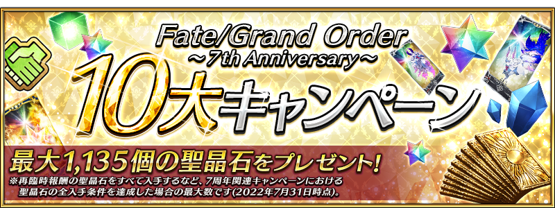
在下述的配發期間中登入的話、贈送可從成為對象的全7張★5(SSR)概念禮裝之中，選擇1張喜愛交換的「FGO 7th Anniversary ★5概念禮裝券」1張！
◆「FGO 7th Anniversary ★5概念禮裝券」配發期間◆
2022年7月31日(日) 17:30～8月10日(三) 11:59
※所有的御主皆是對象(新御主玩家，必須推進至通過「特異點F 炎上汙染都市 冬木 第3節 進行度1」)。
◆達文西工房で的交換條件◆
2022年8月17日(三) 11:59前通過「特異點F 炎上汙染都市 冬木」的御主對象
◆「FGO 7th Anniversary ★5概念禮裝券」交換期間◆
2022年8月1日(一) 17:00～8月17日(三) 11:59
※請注意「FGO 7th Anniversary ★5概念禮裝券」開始配發的隔天才能交換。
◆券的交換方法◆
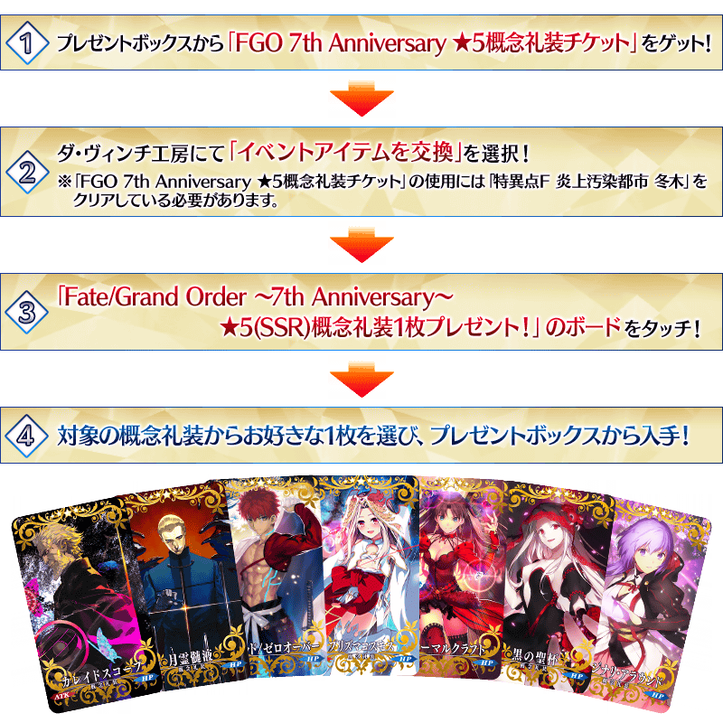
◆有關券的注意◆ ※請注意超過上述配發期間後無法領取「FGO 7th Anniversary ★5概念禮裝券」。 ※交換後的★5(SSR)概念禮裝會送到禮物箱，「FGO 7th Anniversary ★5概念禮裝券」會消失。 ※請注意就算未交換的情況，在交換期間結束後「FGO 7th Anniversary ★5概念禮裝券」會消失。 ※請注意未滿足交換條件的情況，就算持有券的情況也無法交換★5(SSR)概念禮裝。
◆贈送對象概念禮裝◆
| 插圖 | 概念禮裝詳情 | 插圖 | 概念禮裝詳情 |
|---|---|---|---|
| 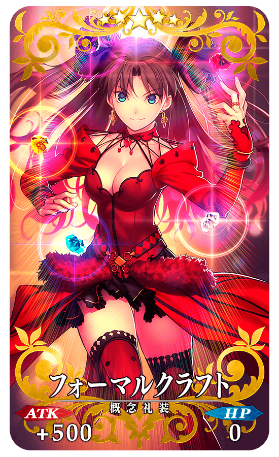 |
★★★★★SSR フォーマルクラフト ATK 500(最大:2000) HP 0 技能 自身的Arts卡的性能提升25% ◆最大解放時效果◆ 自身的Arts卡的性能提升30% |
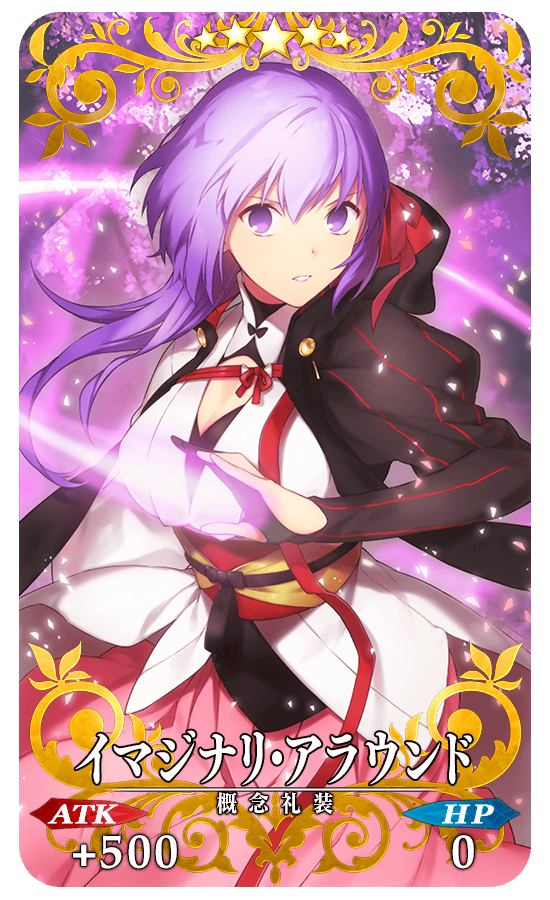 |
★★★★★SSR イマジナリ・アラウンド ATK 500(最大:2000) HP 0 技能 自身的Quick卡的性能提升25% ◆最大解放時效果◆ 自身的Quick卡的性能提升30% |
| 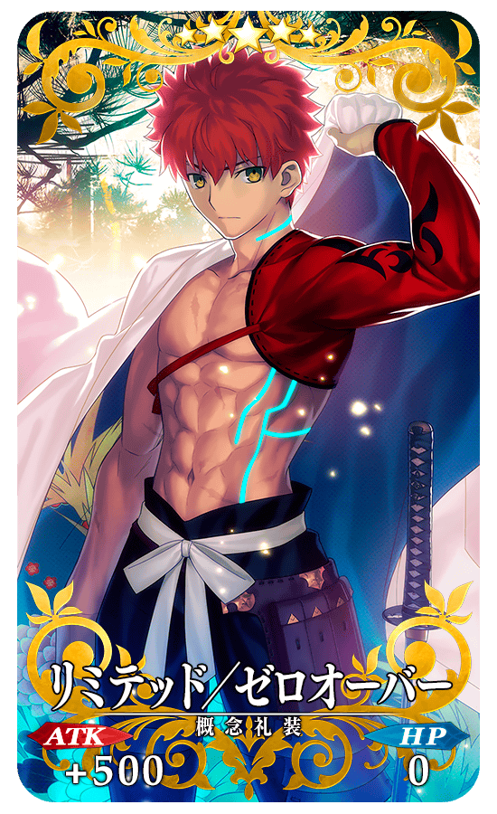 |
★★★★★SSR リミテッド/ゼロオーバー ATK 500(最大:2000) HP 0 技能 自身的Buster卡的性能提升25% ◆最大解放時效果◆ 自身的Buster卡的性能提升30% |
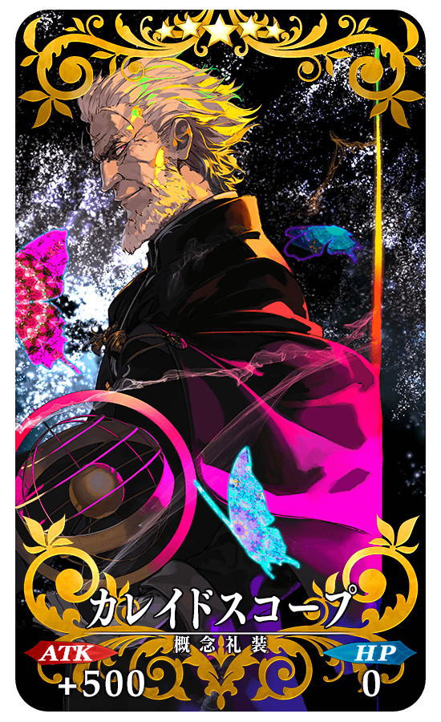 |
★★★★★SSR カレイドスコープ ATK 500(最大:2000) HP 0 技能 自身的NP以80%累積狀態開始戰鬥 ◆最大解放時效果◆ 自身的NP以100%累積狀態開始戰鬥 |
| 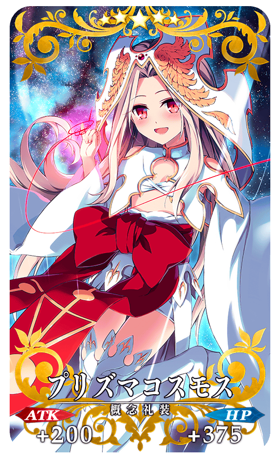 |
★★★★★SSR プリズマコスモス ATK 250(最大:1000) HP 375(最大:1500) 技能 對自身賦予每回合NP8%獲得狀態 ◆最大解放時效果◆ 對自身每賦予回合NP10%獲得狀態 |
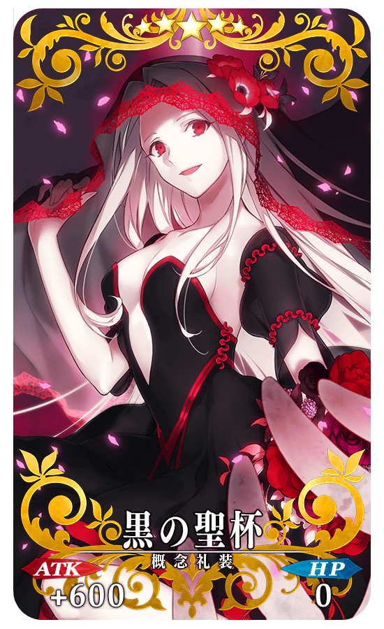 |
★★★★★SSR 黒の聖杯 ATK 600(最大:2400) HP 0 技能 自身的寶具威力提升60%＆賦予每回合HP減少500狀態【副作用】 ◆最大解放時效果◆ 自身的寶具威力提升80%＆賦予每回合HP減少500狀態【副作用】 |
| 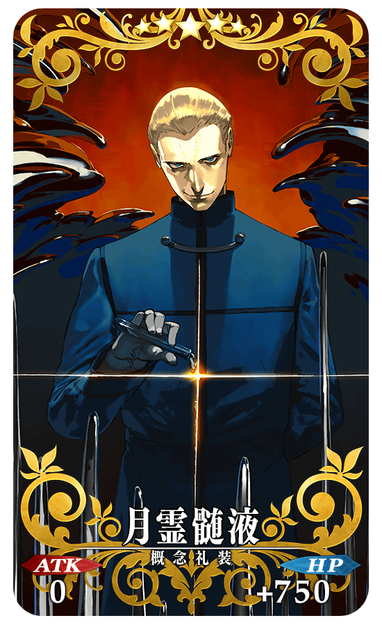 |
★★★★★SSR 月霊髄液 ATK 0 HP 750(最大:3000) 技能 對自身賦予無敵狀態3次＆賦予傷害加成200狀態 ◆最大解放時效果◆ 對自身賦予無敵狀態3次＆賦予傷害加成500狀態 |
為了記念7周年，實施特別的登入獎勵。
在下述期間中7天內連續登入，贈送呼符10張等的豪華報酬！
並且，在同期間中登入5次(1天算1次)的話，贈送英靈結晶・流星之芙芙ALL★4(HP)1張、英靈結晶・日輪之芙芙ALL★4(ATK)1張、迦勒底夢火1個、稀有稜鏡1個、傳承結晶1個！
◆舉辦期間◆
2022年8月1日(一) 3:00～8月11日(四) 2:59
◆贈送對象◆
2022年8月10日(三) 2:59前通過「特異點F 炎上汙染都市 冬木」的御主對象
※上述時間前，在管理室(ターミナル)畫面的關卡橫幅必須要有「CLEAR」的文字顯示。
◆「占星茶壺」使用期限◆
2022年6月22日(三) 17:00～8月31日(三) 11:59
※「占星茶壺」有使用期限，超過使用期限過「占星茶壺」會消失，敬請注意。
【特別連續登入獎勵】
| 連續登入天數 | 贈送內容 | |
|---|---|---|
| 第1天 |

|
睿智的業火ALL★5(SSR) 10張 |

|
300萬QP | |
| 第2天 |

|
友情點數 10萬pt |
|
|
300萬QP | |
| 第3天 |

|
占星茶壺 10個 |
|
|
300萬QP | |
| 第4天 |

|
魔力稜鏡 100個 |
|
|
300萬QP | |
| 第5天 |

|
英靈結晶・太陽之芙芙ALL★3(ATK) 10張 |
|
|
300萬QP | |
| 第6天 |

|
英靈結晶・星之芙芙ALL★3(HP) 10張 |
|
|
300萬QP | |
| 第7天 |

|
呼符 10張 |
|
|
300萬QP | |
※登入獎勵會在每天3:00配發 。 ※連續登入天數中斷後，無法領取之後的禮物。 ※(聖晶石召喚最多11次份)只限同個聖晶石召喚進行的情況。 ※最多能領取7次，但根據成為贈送對象的時間點，可能無法到此上限。
【特別次數登入獎勵】
| 登入次數 | 贈送內容 | |
|---|---|---|
| 第1次 |

|
英靈結晶・流星之芙芙ALL★4(HP) 1張 |
| 第2次 |

|
英靈結晶・日輪之芙芙ALL★4(ATK) 1張 |
| 第3次 |

|
迦勒底夢火 1個 |
| 第4次 |

|
稀有稜鏡 1個 |
| 第5次 |

|
傳承結晶 1個 |
※登入獎勵會在每天3:00配發。 ※合計5天內能領取，但根據成為贈送對象的時間點，可能無法到此上限。

◆「7周年記念福袋召喚(職階區別20劃分)」期間◆
2022年7月31日(日) 17:30～8月10日(三) 11:59
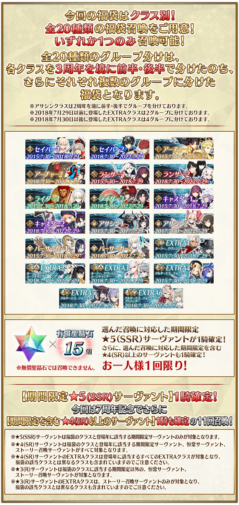
實施戰鬥系統的修改！
Quick卡的1st加成和連攜(Chain)的效果調整外，在選擇所有3種指令卡時發生的新連攜(Chain)追加。
◆翻新實施時間◆
2022年7月31日(日) 17:30～
對Quick卡的1st加成追加新效果！
指令階段中對選擇Quick卡為第1張時的「1st加成」追加新效果。
【原本的Quick卡的1st加成】
・發生1st加成回合的指令卡爆擊星星發生率提升
↓
【追加新效果後的Quick卡的1st加成】
・發生1st加成回合的指令卡爆擊星星發生率提升
・在選擇成1st加成時5張指令卡的爆擊發生率＋20％
※Quick卡的1st加成中的「爆擊發生率＋20％」的效果，會與依據爆擊星星的爆擊發生率提升效果合算。
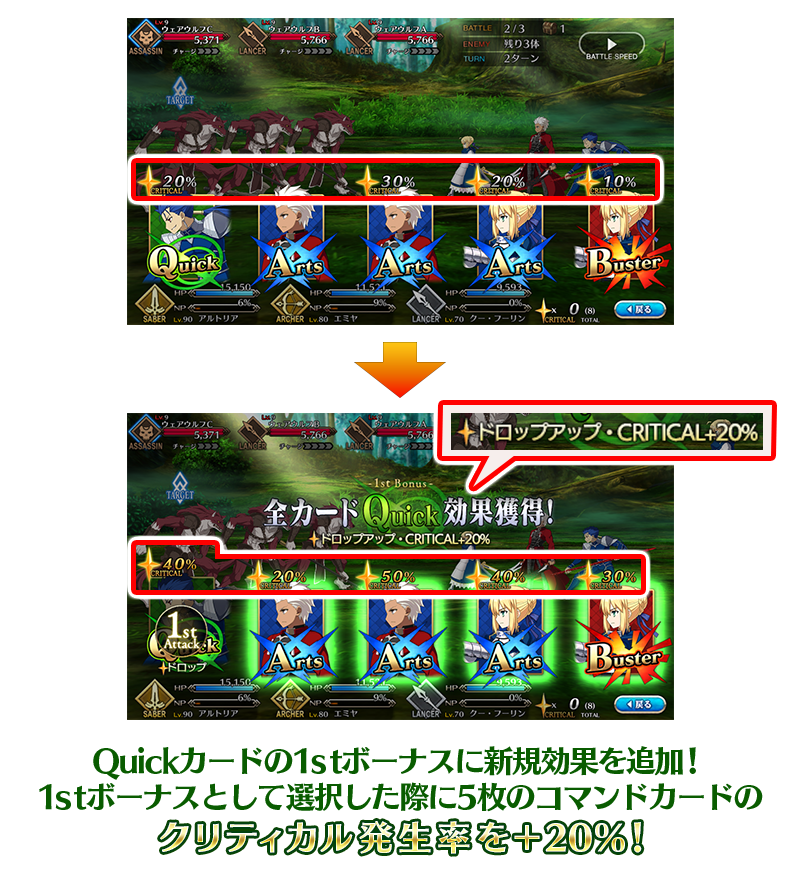
Quick連攜(Chain)的效果調整！
調整指令階段中選擇3張Quick卡時發生的Quick連攜(Chain)效果。
【原本的Quick連攜(Chain)的效果】
・獲得爆擊星星10個，提高下個回合的指令卡爆擊發生率。
↓
【調整後的Quick連攜(Chain)的效果】
・獲得爆擊星星20個，提高下個回合的指令卡爆擊發生率。
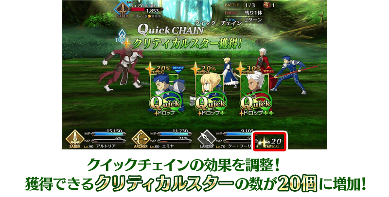
追加選擇3種所有指令卡所發生的新連攜(Chain)！
追加指令階段中選擇Quick、Arts、Buster卡時發生的「強大連攜(Mighty Chain)」與「強大追擊連攜(Mighty Brave Chain)」。
活用2種的新連攜(Chain)，讓戰鬥更有利地推進吧！
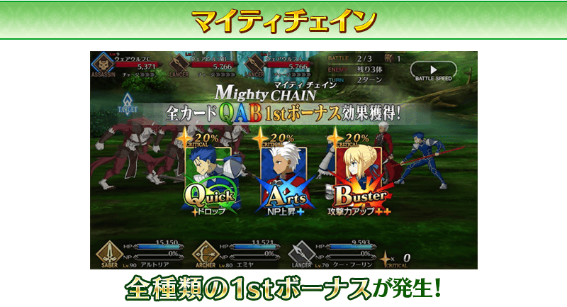
【強大連攜(Mighty Chain)的發生方法】
指令階段中Quick、Arts、Buster卡各選擇1張。
※無論指令卡的順序。
※就算選擇不同從者的指令卡情況，滿足條件後也會發生條件強大連攜(Mighty Chain)。
【強大連攜(Mighty Chain)發生時的效果】
在連攜(Chain)發生回合對選擇指令卡適用Quick、Arts、Buster卡的所有1st加成的效果(效果的詳情如下述)。
・攻擊力提升
・NP獲得量上昇
・爆擊星星發生率提升
・爆擊發生率＋20％

【強大追擊連攜(Mighty Brave Chain)的發生方法】
指令階段中選擇畫上同個從者的Quick、Arts、Buster卡。
※無論指令卡的順序。
※持有從者與支援從者同個的情況，視為不同從者。
【強大追擊連攜(Mighty Brave Chain)發生時的效果】
發生額外攻擊(Extra Attack)。
也包含額外攻擊(Extra Attack)在連攜(Chain)發生回合對選擇指令卡適用Quick、Arts、Buster卡的所有1st加成的效果(效果的詳細如下述)。
・攻擊力提升
・NP獲得量上昇
・爆擊星星發生率提升
・爆擊發生率＋20％（額外攻擊在加成適用外）
戰鬥中的倍速時的繪圖設定有關的遊戲選項追加。
此設定選「高品質」的話，倍速時的動畫變的會更流暢地顯示。
※本功能只適用「倍速時」，不影響「等速時」。 ※請注意設定「高品質」的話，一部份的裝置中有設備發熱量、耗電量激增的可能性。
◆追加時間◆
2022年7月31日(日) 17:30～

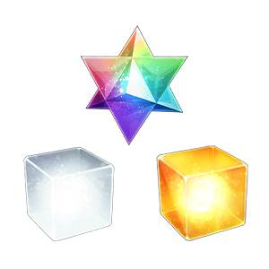
聖晶石與純淨稜鏡做為靈基再臨的報酬追加。
靈基再臨第3階段為止每次靈基再臨可入手純淨稜鏡1個(合計3個)，在最終再臨時則是聖晶石3個。
還有、活動限定從者、可靠友情點數召喚獲得的★4(SR)從者最終再臨時的報酬會是稀有稜鏡1個。
2022年7月31日的時間點入手所有再臨時報酬的聖晶石情況，能獲得聖晶石915個。
※就算靈基再臨所持有多張同個從者的情況，可入手的靈基再臨報酬只有1位的份。 ※關於已經靈基再臨的從者，會對應靈基再臨階段送上靈基再臨的報酬。就算在暫時加入時從者靈基再臨過卻未正式加入的情況、在靈基再臨後靈基變還(販賣)掉的情況也都是對象。 ※活動限定從者包含可靠期間限定友情點數召喚入手的「★1(C)織田信勝」「★1(C)瑪麗・安寧」。
◆追加時間◆
2022年7月31日(日) 17:30～
【從者的各靈基再臨階段報酬】
| 從者的 靈基再臨階段 |
報酬 | |
|---|---|---|
| 靈基再臨第1階段 | 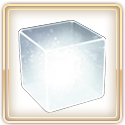 | 純淨稜鏡 1個 |
| 靈基再臨第2階段 | 純淨稜鏡 1個 | |
| 靈基再臨第3階段 | 純淨稜鏡 1個 | |
| 靈基最終再臨階段 |

|
【永久、期間限定、故事限定的從者的情況】 聖晶石3個 |
|
|
【活動限定從者、可靠友情點數召喚獲得★4(SR)從者的情況】 稀有稜鏡 1個 |
|
在御主任務(Extra任務)，追加主線關卡第2部 第6章的通過報酬及「強化關卡」「幕間物語」「主線故事地圖的自由關卡」可依各自的通過次數來達成的新任務。
另外，也追加對應最終再臨從者數可達成的任務。
通過此任務的話，能獲得主要做為期間限定活動報酬入手的「傳承結晶」！
通過所有任務的話，可得到最多30個的傳承結晶、最多120個的聖晶石！
※就算已經通過主線關卡第2部 第6章、「主線故事地圖的自由關卡」「強化關卡」「幕間物語」的玩家、已經最終再臨從者的玩家，也同様能領取通過報酬。
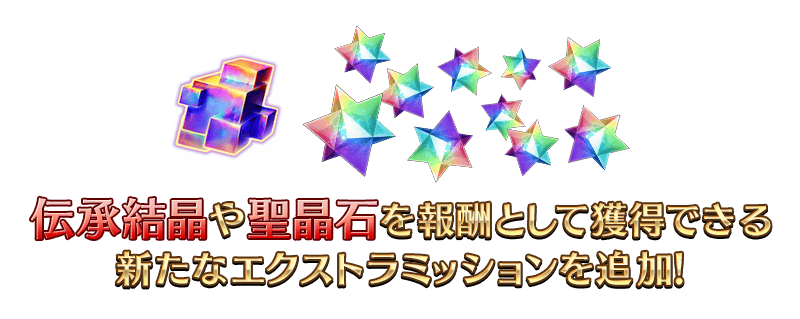
◆翻新實施時間◆
2022年7月31日(日) 17:30～
◆通過報酬的領取方式◆
在御主任務畫面顯示的「Extra(エクストラ)」的項目內，會顯示關聯的任務，請點擊已經通過的任務來領取達成報酬。
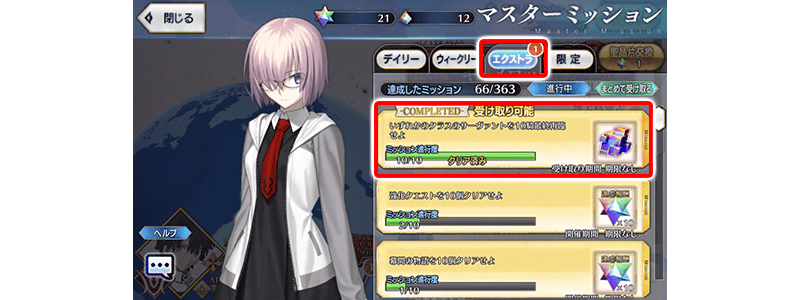
◆追加Extra任務◆
| 任務名稱 | 任務達成報酬 | |
|---|---|---|
| 通過『Lostbelt No.6 妖精圓卓領域 阿瓦隆・勒菲(前篇)』 |
|
聖晶石 10個 |
| 通過『Lostbelt No.6 妖精圓卓領域 阿瓦隆・勒菲(後篇)』 |
|
聖晶石 10個 |
| 通過『Lostbelt No.6 妖精圓卓領域 阿瓦隆・勒菲(崩壊篇)』 |
|
聖晶石 10個 |
| 通過210個強化關卡 |
|
聖晶石 10個 |
| 通過220個強化關卡 |
|
聖晶石 10個 |
| 通過230個強化關卡 |
|
聖晶石 10個 |
| 通過240個強化關卡 |
|
聖晶石 10個 |
| 通過250個強化關卡 |
|
聖晶石 10個 |
| 通過250個幕間物語
|
|
聖晶石 10個 |
| 通過260個幕間物語
|
|
聖晶石 10個 |
| 通過230個主線故事地圖的自由關卡
|
|
聖晶石 10個 |
| 通過240個主線故事地圖的自由關卡
|
|
聖晶石 10個 |
| 最終再臨5位任意職階的從者 |
|
傳承結晶 1個 |
| 最終再臨10位任意職階的從者 |
|
傳承結晶 1個 |
| 最終再臨15位任意職階的從者 |
|
傳承結晶 1個 |
| 最終再臨20位任意職階的從者 |
|
傳承結晶 1個 |
| 最終再臨25位任意職階的從者 |
|
傳承結晶 1個 |
| 最終再臨30位任意職階的從者 |
|
傳承結晶 1個 |
| 最終再臨35位任意職階的從者 |
|
傳承結晶 1個 |
| 最終再臨40位任意職階的從者 |
|
傳承結晶 1個 |
| 最終再臨45位任意職階的從者 |
|
傳承結晶 1個 |
| 最終再臨50位任意職階的從者 |
|
傳承結晶 1個 |
| 最終再臨55位任意職階的從者 |
|
傳承結晶 1個 |
| 最終再臨60位任意職階的從者 |
|
傳承結晶 1個 |
| 最終再臨65位任意職階的從者 |
|
傳承結晶 1個 |
| 最終再臨70位任意職階的從者 |
|
傳承結晶 1個 |
| 最終再臨75位任意職階的從者 |
|
傳承結晶 1個 |
| 最終再臨80位任意職階的從者 |
|
傳承結晶 1個 |
| 最終再臨85位任意職階的從者 |
|
傳承結晶 1個 |
| 最終再臨90位任意職階的從者 |
|
傳承結晶 1個 |
| 最終再臨95位任意職階的從者 |
|
傳承結晶 1個 |
| 最終再臨100位任意職階的從者 |
|
傳承結晶 1個 |
| 最終再臨105位任意職階的從者 |
|
傳承結晶 1個 |
| 最終再臨110位任意職階的從者 |
|
傳承結晶 1個 |
| 最終再臨115位任意職階的從者 |
|
傳承結晶 1個 |
| 最終再臨120位任意職階的從者 |
|
傳承結晶 1個 |
| 最終再臨125位任意職階的從者 |
|
傳承結晶 1個 |
| 最終再臨130位任意職階的從者 |
|
傳承結晶 1個 |
| 最終再臨135位任意職階的從者 |
|
傳承結晶 1個 |
| 最終再臨140位任意職階的從者 |
|
傳承結晶 1個 |
| 最終再臨145位任意職階的從者 |
|
傳承結晶 1個 |
| 最終再臨150位任意職階的從者 |
|
傳承結晶 1個 |
※「通過250個強化關卡」包含「從者強化關卡 第15彈～7th Anniversary～特別篇」中日後開的強化關卡。

做為每日任務報酬新追加「〇月交換券」。
可入手的交換券，與可靠連續登入獎勵入手的分月素材交換券是同樣的，每月能交換的道具會更新。
另外，關於使用・領取期間，也與可靠連續登入獎勵入手的分月素材交換券同樣期間。
※可做為每日任務報酬入手的「〇月交換券」，是達成月的交換券，在2022年8月達成的情況可入手「8月交換券(2022)」。
◆翻新實施時間◆
2022年8月1日(一) 23:00～
【每日任務報酬】
| 任務名稱 | 任務達成報酬 | |
|---|---|---|
| 通過1次關卡 |
|
魔力稜鏡 10個 |
| 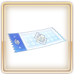 | 〇月交換券 1張 | |
| 通過2次關卡 |
|
魔力稜鏡 10個 |
| 〇月交換券 1張 | ||
| 通過3次關卡 |
|
魔力稜鏡 10個 |
| 〇月交換券 1張 | ||
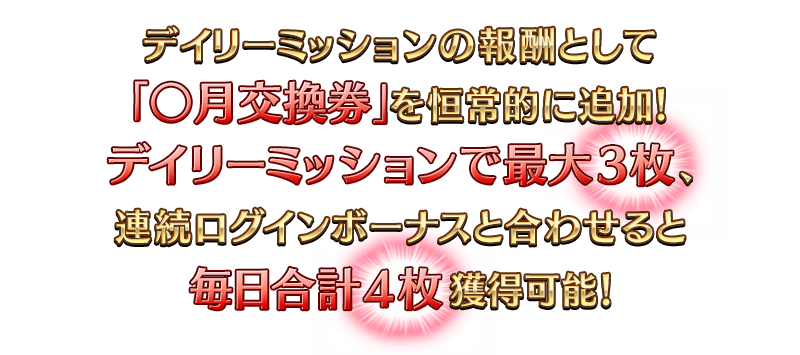
讓從者培育更加容易，調整成週六與週日會開放所有「蒐集種火」與「修練場」的關卡！
另外，伴隨此調整，一部份的每日關卡的開放時間表變更外，各關卡的名稱會變化。
※只有每日關卡的開放時間表與名稱變更，關卡的內容和消耗AP、可做為戰利品獲得的道具不會變更。
※會在從2022年7月31日(日) 17:30開始，所有每日關卡的消耗AP1/2及「蒐集種火」與「修練場」全種開放的宣傳活動結束後的2022年8月10日(三) 12:00實施翻新。
◆翻新實施時間◆
2022年8月10日(三) 12:00～
【時間表調整後的每日關卡一覧】
| 曜日 | 蒐集種火 | 修練場 |
|---|---|---|
| 一 | 每日交替 蒐集種火<殺・槍篇> | 每日交替 弓之修練場 |
| 二 | 每日交替 蒐集種火<騎・劍篇> 每日交替 蒐集種火<弓・術篇> NEW |
每日交替 槍之修練場 |
| 三 | 每日交替 蒐集種火<術・弓篇> | 每日交替 狂之修練場 每日交替 殺之修練場 NEW
|
| 四 | 每日交替 蒐集種火<槍・殺篇> | 每日交替 騎之修練場 每日交替 劍之修練場 NEW
|
| 五 | 每日交替 蒐集種火<劍・騎篇> | 每日交替 術之修練場 |
| 六 ・ 日 |
每日交替 蒐集種火<殺・槍篇> NEW 每日交替 蒐集種火<騎・劍篇> NEW 每日交替 蒐集種火<術・弓篇> NEW 每日交替 蒐集種火<槍・殺篇> NEW 每日交替 蒐集種火<劍・騎篇> NEW 每日交替 蒐集種火<弓・術篇> NEW 每日交替 蒐集種火<隨機篇> NEW
|
每日交替 弓之修練場 NEW 每日交替 槍之修練場 NEW 每日交替 狂之修練場 NEW 每日交替 騎之修練場 NEW 每日交替 術之修練場 NEW 每日交替 殺之修練場 NEW 每日交替 劍之修練場 NEW |
※在開放時間表有變更的關卡會記載成NEW。
在迦勒底之門內每天輪流出現的關卡以期間限定所有的每日關卡消耗AP變成1/2！(就算在戰鬥中撤退的情況，也會是同様的消耗量)
並且，在迦勒底之門內以分天出現的關卡「蒐集種火」與「修練場」以期間限定全種開放。
另外，在此宣傳活動結束後會調整每日關卡的時間表，在週六與週日變的會開放所有「蒐集種火」與「修練場」的關卡。
◆舉辦期間◆
2022年7月31日(日) 17:30～8月10日(三) 11:59
◆對象關卡◆
・所有的「蒐集種火」的關卡
・所有的「修練場」的關卡
・所有的「打開寶物庫之門」的關卡
※以期間限定出現的「蒐集種火」及「修練場」會繼承「關卡情報」到平常每天輪流出現的「蒐集種火」及「修練場」關卡。 ※每日關卡的詳細如下。
【打開寶物庫之門、蒐集種火 關卡的推薦Lv與消耗AP】
| 難易度 | 推薦Lv | 消耗AP |
|---|---|---|
| 初級 | 5 | 10→5 |
| 中級 | 10 | 20→10 |
| 上級 | 25 | 30→15 |
| 超級 | 40 | 40→20 |
| 極級 | 60 | 40→20 |
【修練場 關卡的推薦Lv與消耗AP】
| 難易度 | 推薦Lv | 消耗AP |
|---|---|---|
| 初級 | 10 | 10→5 |
| 中級 | 25 | 20→10 |
| 上級 | 40 | 30→15 |
| 超級 | 60 | 40→20 |
| 極級 | 80 | 40→20 |
【每日關卡一覧】
| 關卡名 | 做為戰利品可獲得的 主要道具 |
攻略推薦 職階 |
|---|---|---|
| 【7周年記念】 週一 蒐集種火<殺・槍篇> AP1/2 |
Assassin、Lancer、Berserker的經驗值卡 |   |
| 【7周年記念】 週二 蒐集種火<騎・劍篇> AP1/2 |
Rider、Saber、Berserker的經驗值卡 |   |
| 【7周年記念】 週三 蒐集種火<術・弓篇> AP1/2 |
Caster、Archer、Berserker的經驗值卡 |   |
| 【7周年記念】 週四 蒐集種火<槍・殺篇> AP1/2 |
Lancer、Assassin、Berserker的經驗值卡 | |
| 【7周年記念】 週五 蒐集種火<劍・騎篇> AP1/2 |
Saber、Rider、Berserker的經驗值卡 | |
| 【7周年記念】 週六 蒐集種火<弓・術篇> AP1/2 |
Archer、Caster、Berserker的經驗值卡 | |
| 【7周年記念】 週日 蒐集種火<隨機篇> AP1/2 |
Saber、Archer、Lancer、Rider、Caster、Assassin、Berserker的經驗值卡(隨機) | - |
| 【7周年記念】 週一 弓之修練場 AP1/2 |
Archer的靈基再臨用道具、Archer的技能強化素材道具 |  |
| 【7周年記念】 週二 槍之修練場 AP1/2 |
Lancer的靈基再臨用道具、Lancer的技能強化素材道具 | |
| 【7周年記念】 週三 狂之修練場 AP1/2 |
Berserker的靈基再臨用道具、Berserker的技能強化素材道具 | ALL |
| 【7周年記念】 週四 騎之修練場 AP1/2
|
Rider的靈基再臨用道具、Rider的技能強化素材道具 |  |
| 【7周年記念】 週五 術之修練場 AP1/2 |
Caster的靈基再臨用道具、Caster的技能強化素材道具 | |
| 【7周年記念】 週六 殺之修練場 AP1/2 |
Assassin的靈基再臨用道具、Assassin的技能強化素材道具 | |
| 【7周年記念】 週日 劍之修練場 AP1/2 |
Saber的靈基再臨用道具、Saber的技能強化素材道具 | |
| 打開寶物庫之門 AP1/2
|
QP | |
※Berserker在所有每日關卡皆為有效職階。

下述的期間中，在進行從者及概念禮裝的強化時，大成功(經驗值2倍加成)・極大成功(經驗值3倍加成)發生機率以期間限定變成3倍！
務必藉此機會強化中意的從者和概念禮裝吧！
※概念禮裝強化＆進化時的大成功・極大成功的獲得EXP增加不適用「累積EXP」。
◆舉辦期間◆
2022年7月31日(日) 17:30～8月10日(三) 11:59
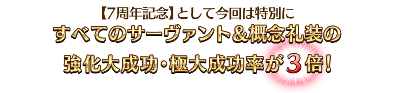
向所有的御主對象，「從者」「概念禮裝」的持有欄位以追加擴張100欄位，並且，「指令紋章」的持有欄位以追加擴張50欄位。
另外，在達文西工房內的「從者保管欄位增加」「概念禮裝保管欄位增加」，可消耗魔力稜鏡追加的保管欄位上限數，再追加20次份(合計100欄位份)。
◆翻新實施時間◆
2022年7月31日(日) 17:30～
【持有欄位的擴張數】
| 對象持有欄位 | 擴張數 |
|---|---|
| 從者持有欄位 | 600→700(追加100欄位) |
| 概念禮裝持有欄位 | 600→700(追加100欄位) |
| 指令紋章持有欄位 | 350→400(追加50欄位) |
【保管欄位的擴張數】
| 對象保管欄位 | 剩餘次數 | 最大擴張時 |
|---|---|---|
| 從者保管欄位增加 | 180→200(追加20次份) | 1000→1100(追加100欄位) |
| 概念禮裝保管欄位增加 | 180→200(追加20次份) | 1000→1100(追加100欄位) |
※請注意在從者保管欄位的擴張及概念禮裝保管欄位的擴張，關於1次的擴張需要魔力稜鏡50個。

舉辦「從者強化關卡 第15彈～7th Anniversary～特別篇」！
舉辦強化從者能力的特別關卡「從者強化關卡」的第15彈！
本次為了記念「Fate/Grand Order ～7th Anniversary～」的舉辦，合計14位從者的強化關卡永久追加！
對象從者的強化關卡連續7天在迦勒底之門開放。
不僅進行對象從者的強化，也可獲得聖晶石做為關卡通過報酬。
※從者強化關卡請注意在沒有文字冒險部份。
◆追加時間◆
2022年8月1日(一) 17:00～
◆開放條件◆
持有的強化對象從者，必須使其最終再臨。
※未持有對象從者的話，不會出現關卡。
※關卡沒有舉辦期限。
第2部 第7章「黄金樹海紀行 四重冥界」預定2022年12月開幕！
關於詳情敬請期待續報！
以期間限定舉辦的第2部 第6章為止的主線關卡的消耗AP1/2宣傳活動，變成永久舉辦。
請務必推進主線關卡等待第2部 第7章的開幕！
◆翻新實施時間◆
2022年7月31日(日) 17:30～
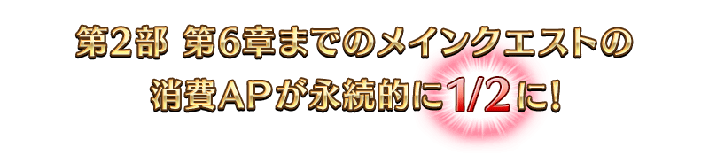

舉辦「進階關卡 第7彈 ～7th Anniversary～ 特別篇」！
為了記念「Fate/Grand Order ～7th Anniversary～」的舉辦，經過7月30日(六)與7月31日(日)的2天間，合計7個「進階關卡」在迦勒底之門內永久追加！
進階關卡是只要滿足各關卡所定的開放條件後就能挑戰，可獲得包含2張新概念禮裝的7張特別概念禮裝做為關卡通過報酬。
※請注意在進階關卡沒有文字冒險部份。
◆追加時間◆
第1次:2022年7月30日(六) 8:00～
第2次:2022年7月31日(日) 8:00～
※關卡沒有舉辦期限。
7周年記念限定任務以期間限定舉辦中！
期間限定的「7周年記念限定任務」，7月30日(六)在「御主任務」的「限定」標籤內追加！
通過任務的話可獲得魔術禮裝「總耶高校學生服」、指令紋章「★3(R)ネココ・ネココライト」、呼符、魔力稜鏡外，可交換「英靈夢裝」的「FGO 7th Anniversary 英靈夢裝券」。
以期間限定在達文西工房的「魔力稜鏡交換」與「稀有稜鏡交換」追加道具。
◆道具交換期間◆
2022年7月31日(日) 17:30～8月10日(三) 11:59
◆「魔力稜鏡交換」追加道具◆
| 追加道具 | 能交換次數 | 1次交換所需的 魔力稜鏡數 |
|
|---|---|---|---|

|
【期間限定】 Quick紋章開啟器 |
3次 | 50個 |

|
【期間限定】 Arts紋章開啟器 |
3次 | 50個 |

|
【期間限定】 Buster紋章開啟器 |
3次 | 50個 |

|
【期間限定】 紋章移除器 |
3次 | 100個 |
|
|
【期間限定】 呼符 |
10次 | 10個 |

|
【期間限定】 睿智的猛火ALL★4(SR)10張組 |
10次 | 20個 |
|
|
【期間限定】 英靈結晶・星之芙芙ALL★3(HP) |
30次 | 5個 |
|
|
【期間限定】 英靈結晶・太陽之芙芙ALL★3(ATK) |
30次 | 5個 |
◆「稀有稜鏡交換」追加道具◆
| 追加道具 | 能交換次數 | 1次交換所需的 稀有稜鏡數 |
|
|---|---|---|---|

|
【期間限定】 獸之足跡 |
3次 | 1個 |
|
|
【期間限定】 迦勒底夢火 |
1次 | 3個 |
|
|
【期間限定】 紋章移除器 |
3次 | 1個 |
|
|
【期間限定】 傳承結晶 |
1次 | 5個 |
|
|
【期間限定】 英靈結晶・流星之芙芙ALL★4(HP) |
1次 | 3個 |
|
|
【期間限定】 英靈結晶・日輪之芙芙ALL★4(ATK) |
1次 | 3個 |
|
|
【期間限定】 友情點數 20,000pt |
5次 | 1個 |
過去登場的「★5(SSR)兩儀式(Saber)」簡易靈衣「斬首兔女郎(第一再臨)」「斬首兔女郎(第二再臨)」「斬首兔女郎(第三再臨)」開放權、「★5(SSR)謎之女主角X」的簡易靈衣「謎之女主角Z」開放權、「★5(SSR)宮本武藏(Berserker)」的簡易靈衣「武藏醬的夏日模式」開放權在達文西工房的「靈衣縫製」追加！
關於詳情請確認此處的公告。
◆追加時間◆
2022年8月3日(三) 17:00～

「靈衣開放」是自強化畫面進行。
※「靈衣開放」後會自動切換戰鬥角色和外觀圖片。若想回到「靈衣開放」前的狀態和變成其他再臨階段的情況，可自從者詳細畫面變更。 ※進行「靈衣開放」不會讓職階和能力等有所變化。
可在達文西工房的「靈衣縫製」交換的「★5(SSR)伊莉雅絲菲爾・馮・愛因茲貝倫(Caster)」的簡易靈衣「聖約型態」開放權，通過「終局特異點」後變得可免費交換！
◆靈衣開放權交換免費化的時間◆
2022年8月3日(三) 17:00～
※簡易靈衣「聖約型態」開放權的交換免費化沒有期限。
◆靈衣開放權交換免費化的條件◆
滿足以下條件的御主才能免費交換
・通過「終局特異點」
※關於已經取得交換對象靈衣開放權的玩家，無法交換。 ※有用稀有稜鏡2個交換簡易靈衣「聖約型態」開放權，並已經有達成靈衣開放權交換免費化的條件情況，會返還交換使用的稀有稜鏡2個到禮物箱。 ※用稀有稜鏡2個交換簡易靈衣「聖約型態」開放權後達成免費化條件的情況，也會返還交換使用的稀有稜鏡2個到禮物箱。
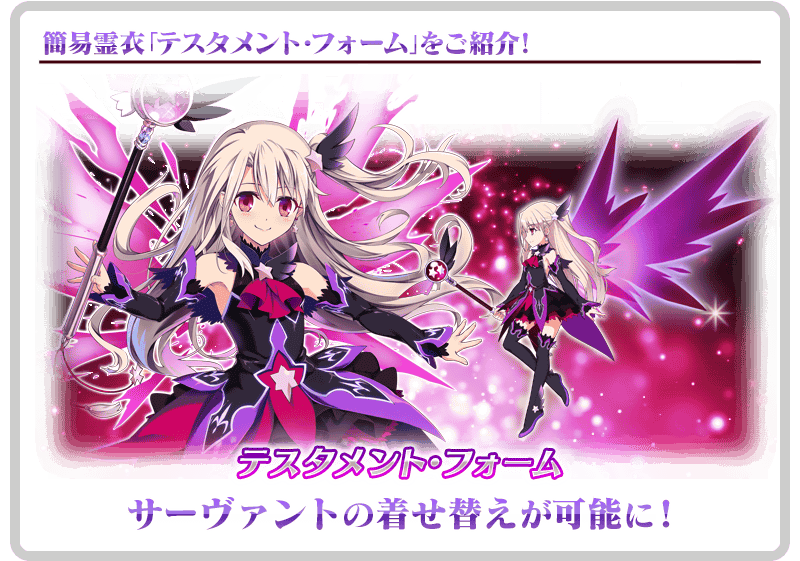
介紹2022年7月31日(日)的更新後新追加的功能。
◆翻新實施時間◆
2022年7月31日(日) 17:30～
就算好友以外的支援從者修改成也可使用寶具
就算好友的從者和NPC從者以外的支援從者，進行修改變得在戰鬥中也可使用寶具。
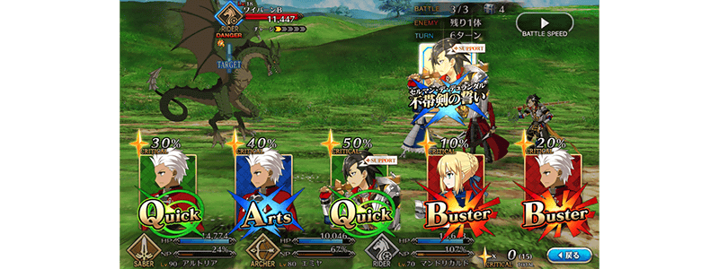
一部份「幕間物語」中以期間限定可使用的NPC選擇功能，修改成就算是其他「幕間物語」也可使用
以期間限定成為「就算未持有對象從者也能開放」的一部份「幕間物語」中，未持有對象從者的狀態下挑戰有編制限制的關卡時，在隊伍編制時能選擇NPC。
此功能修改變得在有對象從者編制限制的所有「幕間物語」可永久使用。
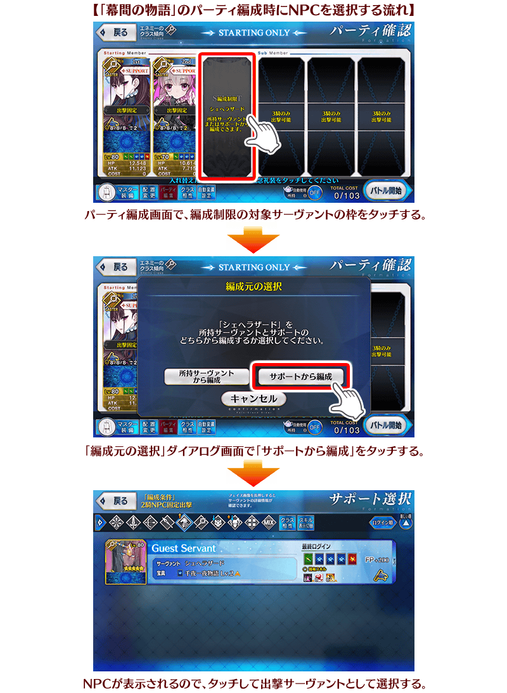
修改變得更容易了解聖晶片的收集狀況
進行各種UI的追加和調整變得更更容易了解持有的聖晶片收集狀況。
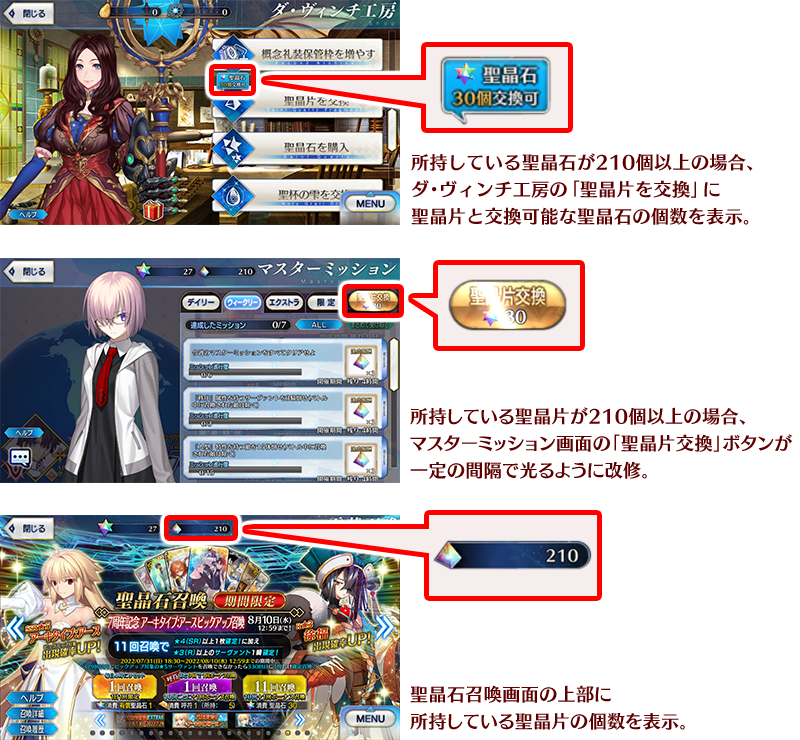
在召喚必須的聖晶石不足時修改成可用聖晶片交換
聖晶石召喚畫面中在點擊「1次召喚」「11次召喚」時持有聖晶石不足，當持有足夠聖晶片可交換各召喚中必須的聖晶石數的情況，在畫面的右下に
會顯示「聖晶片交換」鍵。
點擊此「聖晶片交換」鍵的話會顯示聖晶石交換對話框，可在該處用聖晶片交換聖晶石。
※上述「1次召喚」是指消耗聖晶石3個的平常召喚。
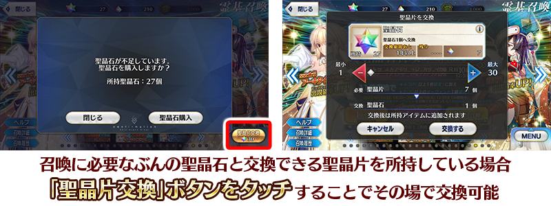
寶具演出的全螢幕顯示對應從者擴張！
一部份從者的寶具演出對應了全螢幕顯示。
這使得一部份敵人除外的全從者寶具演出皆以全螢幕顯示。
◆全螢幕顯示對應從者◆
| 職階 | 稀有度 | 從者名 | |
|---|---|---|---|
|
|
Saber | ★★★★ | 女王梅芙 |
| ★★★★ | 迪爾姆德・奧德利暗 | ||
| ★★★★ | 拉克什米・芭伊 | ||
|
|
Archer | ★★★★★ | 清少納言 |
| ★★★★ | 馬嘶 | ||
| ★★★★ | 海倫娜・布拉瓦茨基 | ||
|
|
Lancer | ★★★★★ | 玉藻前 |
| ★★★★ | 美杜莎 | ||
|
|
Rider | ★★★★ | 伊絲塔 |
| ★ | 巴索羅繆・羅伯茨 | ||
|
|
Caster | ★★★★★ | 伊莉雅絲菲爾・馮・愛因茲貝倫 |
| ★★★★ | 示巴的女王(米德拉什的Caster) | ||
| ★★★ | 傑羅尼莫 | ||
| ★★★ | 查爾斯・巴貝奇 | ||
| ★ | 沃夫岡・阿瑪迪斯・莫札特 | ||
|
|
Assassin | ★★★ | 百貌的哈桑 |
| ★★★ | 亨利・傑基爾＆海德 | ||
| ★★ | 咒腕的哈桑 | ||
| ★★ | 歌劇魅影 | ||
| ★ | 瑪塔・哈里 | ||

|
Berserker | ★★★ | 大流士三世 |
| ★★ | 莎樂美 | ||
| ★ | 阿斯忒里翁 | ||
| ★ | 斯巴達克斯 | ||

|
Avenger | ★★★★ | 戈爾貢 |
| ★★★★ | 海森・羅伯(新宿的Avenger) | ||

|
Foreigner | ★★★★★ | 艾比蓋兒・威廉斯〔夏〕 |
| ★★★★★ | 葛飾北齋 | ||
在「Fate/Grand Order ～7th Anniversary～」的特設頁面，實施智慧型手機用桌面、Twitter圖示、封面圖片的贈送中！
在社群媒體分享特設頁面就能下載，請務必使用。
◆配發期間◆
2022年7月31日(日) 17:30～8月10日(三) 11:59
◆配發期間◆
https://www.fate-go.jp/special/2022-7th_anniversary/
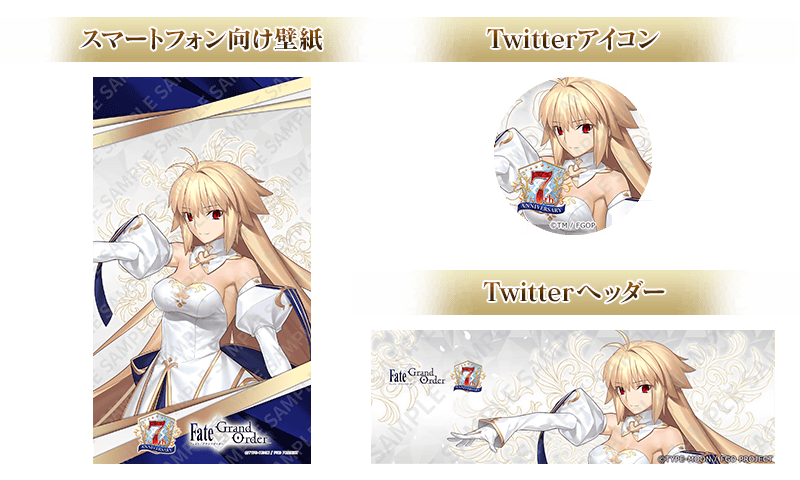
【8月3日(三) 17:00追記】
其他還有，
・7周年記念 Archetype:Earth Pick Up召喚
・7周年記念福袋召喚(職階區別20劃分)
・7周年記念限定從者每日交替Pick Up召喚
以期間限定舉辦中！
關於詳情，請自下述橫幅確認。
■「7周年記念 Archetype:Earth Pick Up召喚」詳細情報
■「7周年記念福袋召喚(職階區別20劃分)」詳細情報
■「7周年記念限定從者每日交替Pick Up召喚」詳細情報